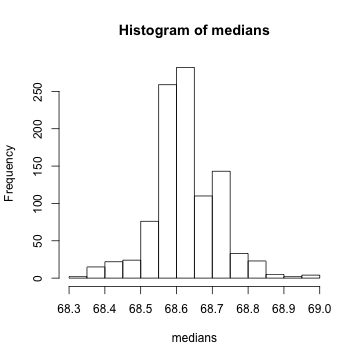
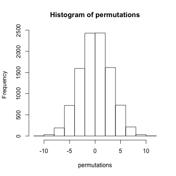

- The jackknife is a tool for estimating standard errors and the bias of estimators
- As its name suggests, the jackknife is a small, handy tool; in contrast to the bootstrap, which is then the moral equivalent of a giant workshop full of tools
- Both the jackknife and the bootstrap involve resampling data; that is, repeatedly creating new data sets from the original data
Resampled inference
Statistical Inference
Brian Caffo, Jeff Leek, Roger Peng
Johns Hopkins Bloomberg School of Public Health
The jackknife
The jackknife
- The jackknife deletes each observation and calculates an estimate based on the remaining \(n-1\) of them
- It uses this collection of estimates to do things like estimate the bias and the standard error
- Note that estimating the bias and having a standard error are not needed for things like sample means, which we know are unbiased estimates of population means and what their standard errors are
The jackknife
- We'll consider the jackknife for univariate data
- Let \(X_1,\ldots,X_n\) be a collection of data used to estimate a parameter \(\theta\)
- Let \(\hat \theta\) be the estimate based on the full data set
- Let \(\hat \theta_{i}\) be the estimate of \(\theta\) obtained by deleting observation \(i\)
- Let \(\bar \theta = \frac{1}{n}\sum_{i=1}^n \hat \theta_{i}\)
Continued
- Then, the jackknife estimate of the bias is \[ (n - 1) \left(\bar \theta - \hat \theta\right) \] (how far the average delete-one estimate is from the actual estimate)
- The jackknife estimate of the standard error is \[ \left[\frac{n-1}{n}\sum_{i=1}^n (\hat \theta_i - \bar\theta )^2\right]^{1/2} \] (the deviance of the delete-one estimates from the average delete-one estimate)
Example
We want to estimate the bias and standard error of the median
library(UsingR)
data(father.son)
x <- father.son$sheight
n <- length(x)
theta <- median(x)
jk <- sapply(1:n, function(i) median(x[-i]))
thetaBar <- mean(jk)
biasEst <- (n - 1) * (thetaBar - theta)
seEst <- sqrt((n - 1) * mean((jk - thetaBar)^2))
Example test
c(biasEst, seEst)
## [1] 0.0000 0.1014
library(bootstrap)
temp <- jackknife(x, median)
c(temp$jack.bias, temp$jack.se)
## [1] 0.0000 0.1014
Example
- Both methods (of course) yield an estimated bias of 0 and a se of 0.1014
- Odd little fact: the jackknife estimate of the bias for the median is always \(0\) when the number of observations is even
- It has been shown that the jackknife is a linear approximation to the bootstrap
- Generally do not use the jackknife for sample quantiles like the median; as it has been shown to have some poor properties
Pseudo observations
- Another interesting way to think about the jackknife uses pseudo observations
- Let \[ \mbox{Pseudo Obs} = n \hat \theta - (n - 1) \hat \theta_{i} \]
- Think of these as ``whatever observation \(i\) contributes to the estimate of \(\theta\)''
- Note when \(\hat \theta\) is the sample mean, the pseudo observations are the data themselves
- Then the sample standard error of these observations is the previous jackknife estimated standard error.
- The mean of these observations is a bias-corrected estimate of \(\theta\)
The bootstrap
- The bootstrap is a tremendously useful tool for constructing confidence intervals and calculating standard errors for difficult statistics
- For example, how would one derive a confidence interval for the median?
- The bootstrap procedure follows from the so called bootstrap principle
The bootstrap principle
- Suppose that I have a statistic that estimates some population parameter, but I don't know its sampling distribution
- The bootstrap principle suggests using the distribution defined by the data to approximate its sampling distribution
The bootstrap in practice
- In practice, the bootstrap principle is always carried out using simulation
- We will cover only a few aspects of bootstrap resampling
The general procedure follows by first simulating complete data sets from the observed data with replacement
- This is approximately drawing from the sampling distribution of that statistic, at least as far as the data is able to approximate the true population distribution
Calculate the statistic for each simulated data set
Use the simulated statistics to either define a confidence interval or take the standard deviation to calculate a standard error
Nonparametric bootstrap algorithm example
Bootstrap procedure for calculating confidence interval for the median from a data set of \(n\) observations
i. Sample \(n\) observations with replacement from the observed data resulting in one simulated complete data set
ii. Take the median of the simulated data set
iii. Repeat these two steps \(B\) times, resulting in \(B\) simulated medians
iv. These medians are approximately drawn from the sampling distribution of the median of \(n\) observations; therefore we can
- Draw a histogram of them
- Calculate their standard deviation to estimate the standard error of the median
- Take the \(2.5^{th}\) and \(97.5^{th}\) percentiles as a confidence interval for the median
Example code
B <- 1000
resamples <- matrix(sample(x, n * B, replace = TRUE), B, n)
medians <- apply(resamples, 1, median)
sd(medians)
## [1] 0.08834
quantile(medians, c(0.025, 0.975))
## 2.5% 97.5%
## 68.41 68.82
Histogram of bootstrap resamples
hist(medians)

Notes on the bootstrap
- The bootstrap is non-parametric
- Better percentile bootstrap confidence intervals correct for bias
- There are lots of variations on bootstrap procedures; the book "An Introduction to the Bootstrap"" by Efron and Tibshirani is a great place to start for both bootstrap and jackknife information
Group comparisons
- Consider comparing two independent groups.
- Example, comparing sprays B and C
data(InsectSprays)
boxplot(count ~ spray, data = InsectSprays)

Permutation tests
- Consider the null hypothesis that the distribution of the observations from each group is the same
- Then, the group labels are irrelevant
- We then discard the group levels and permute the combined data
- Split the permuted data into two groups with \(n_A\) and \(n_B\) observations (say by always treating the first \(n_A\) observations as the first group)
- Evaluate the probability of getting a statistic as large or large than the one observed
- An example statistic would be the difference in the averages between the two groups; one could also use a t-statistic
Variations on permutation testing
| Data type | Statistic | Test name |
|---|---|---|
| Ranks | rank sum | rank sum test |
| Binary | hypergeometric prob | Fisher's exact test |
| Raw data | ordinary permutation test |
- Also, so-called randomization tests are exactly permutation tests, with a different motivation.
- For matched data, one can randomize the signs
- For ranks, this results in the signed rank test
- Permutation strategies work for regression as well
- Permuting a regressor of interest
- Permutation tests work very well in multivariate settings
Permutation test for pesticide data
subdata <- InsectSprays[InsectSprays$spray %in% c("B", "C"), ]
y <- subdata$count
group <- as.character(subdata$spray)
testStat <- function(w, g) mean(w[g == "B"]) - mean(w[g == "C"])
observedStat <- testStat(y, group)
permutations <- sapply(1:10000, function(i) testStat(y, sample(group)))
observedStat
## [1] 13.25
mean(permutations > observedStat)
## [1] 0
Histogram of permutations
